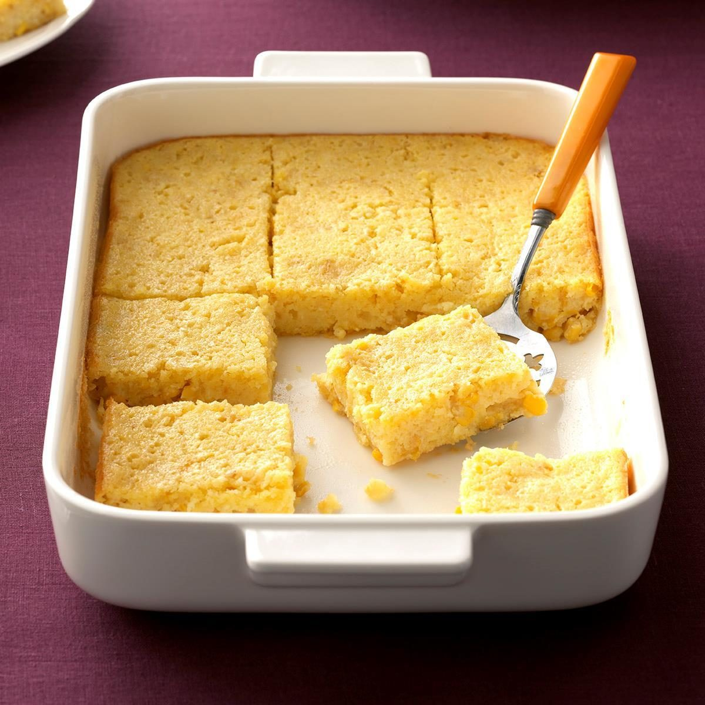

Corn Pudding Recipe

Image of a tray of corn pudding
Grandma's corn pudding is comfort food at its best. This creamy corn casserole is easy to make with both whole kernal and cream style corn.
Ingredients
- 5 large eggs
- 1/3 cup butter, melted and slightly cooled
- 1/4 cup white sugar
- 1/2 cup milk
- 1/4 cup cornstarch
- 1 can whole kernel corn, drained
- 2 cans cream-style corn
Steps
- Preheat the oven to 400 degrees F. Grease a 2-quart casserole dish.
- Whisk eggs lightly in a large bowl. Add milk, melted butter, sugar, and cornstarch; whisk until well combined. Stir in drained corn and cream-style corn until fully blended. Pour mixture into the prepared casserole dish.
- Bake in the preheated oven until golden brown, about 1 hour.